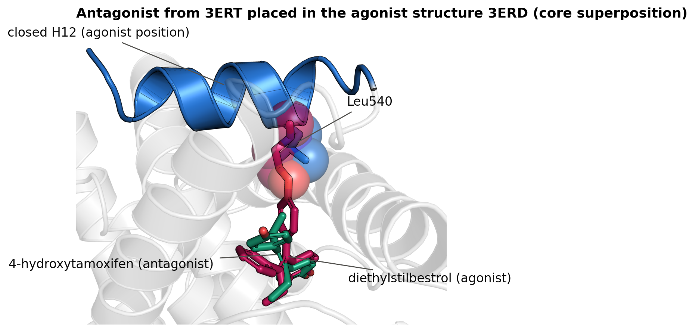

Third month's report
We study how much the ESR1 ligand-binding domain (LBD) structures in the PDB differ and how often the same shape repeats. The October report established the working set (788 chains from 351 X-ray entries) and its two main structural groups, which differ almost only in the position of helix 12 (H12, the "lid"): cl7, H12 closed over the ligand pocket (445 chains), and cl4, H12 lying in the coactivator groove (329 chains), plus 14 chains in five small groups. This report covers only what was added since then: the requests from the meetings of 28 October, 4 November and 11 November, the hand-labelled action class of every crystallised ligand, the professor's question on steroidal ligands, PyMOL views of an agonist and an antagonist complex, and the residue-level ESR1/ESR2 comparison.
Main result. The action class of the ligand explains the two structural groups: 95 of 98 agonist complexes have the closed lid, 88 of 115 antagonist complexes have the lid in the groove, and partial agonists fall mostly with the agonists. Inside one lid position the class leaves almost no trace on H12 (at most 0.21 Å, against 0.91 Å between copies of one crystal): the structural signature of function is a switch between two positions, not a graded shift. Steroidal ligands are mostly agonists, not antagonists. Table 1 answers each request in one line.
| Request | Answer | Figure |
|---|---|---|
| Meeting of 28 October | ||
| Is an incomplete H12 biology or experimental conditions? | Mostly definition and crystal packing: ending the H12 window at residue 544 instead of 547 makes an incomplete lid rare (cl4: 209 → 19 chains), and inside one crystal the copy with more lattice contacts at the lid has more of it modelled (38 crystals against 14). | 1, 2 |
| Compare incomplete helices through their midpoints? | Yes: a helix midpoint moves 0.91 Å or less with 4 end residues missing, and midpoint distances reproduce the lid groups (adjusted Rand index 0.954). | 3 |
| Mark the outliers on the clustering? | The 22 consensus outliers are rarer in cl7 than expected (2 against 8.0); on every map they sit at group edges or between the groups. | 5 |
| Meeting of 4 November | ||
| Pocket filling relative to the E2 pocket? | No difference between cl7 and cl4 (entry level q = 0.14). With the new labels, inside cl7 the pocket grows from agonist to antagonist (75%, 85%, 91% of the E2 pocket) while the ligand fills about a third of it in every class. | 16 |
| Affinities from different assays? | Referencing each affinity to E2 in the same assay narrows the spread between assays for 4 of 5 ligands (median SD 0.86 → 0.56). | 9 |
| Action classes against structure? | Hand labels now cover 302 of 368 ligand pairs (51 of 362 with ChEMBL in October). Agonists sit in cl7, antagonists mostly in cl4, partial agonists mostly in cl7. | 10–12 |
| Can an antagonist destabilise H12? Picture of H12 and ligand? | The antagonist's side chain occupies the place of the closed H12 (1.2 Å from Leu540 after superposition), so H12 moves 13 Å into the groove. In cl4 a longer H12 is a less mobile H12 (Spearman ρ −0.37). | 19, 20 |
| Meeting of 11 November | ||
| Outliers of the lid-to-H11 distance (cl4, two cl7 chains, grey)? | 15 chains lie beyond ordinary variation. The two cl7 chains named at the meeting, 5KCU B and 5KD9 B, sit furthest out and both carry antagonists of one oxabicycloheptene series; cl4 has only three mild extremes; five grey chains hold the lid between the two positions. | 4 |
| Sammon map, self-organising map, UMAP of PCA? | All three show the same two groups; no smaller island is set apart by more than copies of one crystal (0.60 against 1.26 Å). | 5 |
| Hide H12 and cluster again? | Without H12 the chains form one ensemble: no clustering recovers the lid groups (adjusted Rand index ≤ 0.42, against 0.94 with H12). | 6 |
| Phi/psi, helix centres of mass, no superposition? | Only the 8 distances to H12 change between the groups (up to 5.5 Å); the other 28 helix pairs move 0.20 Å or less. | 7 |
| Do crystallisation additives stabilise the lid? | No: additives, recipe and solvent content stay inside ordinary variation (0 of 22 tests); lattice contacts go with how much of the lid is modelled. | 2, 8 |
| Steroidal vs non-steroidal; "steroids should be antagonists"? | The 18 steroidal ligands sit together in chemical space, but 33 of their 42 complexes are agonists and only 3 antagonists (Fisher p = 7×10⁻⁷ for fewer antagonists than other ligands). | 17, 18 |
Table 1: Requests since the October report and their answers. "Ordinary variation" is the larger of the spread within a group and the 95th percentile of differences between copies of one crystal (0.91 Å in cl7, 1.08 Å in cl4 for the lid-to-H11 distance); a difference counts as real only above it.
Answer the requests of the three meetings since the October report; replace the sparse ChEMBL mechanism labels with hand-curated action classes and test, on comparable structures, whether class changes the position of H12; ask whether steroidal ligands behave differently; show the agonist/antagonist difference on real structures; and extend the ESR1/ESR2 comparison to single residues. Coverage here means analyses with saved results in the repository.
Inputs. The structures, chain table, superposition core, RMSD matrix and groups are those of October. New
input: data/ligands/esr1_dataset_final.csv, one row per PDB entry × ligand (377 rows, 368 real ligands)
with an action class (agonist 104, partial agonist 79, antagonist 119, unknown 64, mixed 2) assigned from the
primary article of each entry, its evidence source, DOI, InChIKey, construct and, where reported, transcriptional
efficacy and proliferation (% of E2).
Linking labels to chains. A chain is linked when its entry and its primary ligand code match a labelled row exactly; the main set keeps chains with a single ligand (765 chains, 355 pairs, 346 entries), and the three main classes give 631 chains, 291 pairs, 287 entries and 240 distinct InChIKeys. Pairs whose chains fall in different groups are kept as "two groups". Constructs and peptides are taken from the structures; the curated table disagrees on the mutant flag for 47 pairs (for example 1A52 carries Q502E) and agrees on the peptide flag for all pairs.
Comparing classes. The unit is the PDB entry × ligand pair (median over its chains in a group). Classes are compared only inside one lid position and one construct: cl7 with the Y537S construct and a bound coactivator peptide, and cl4 with an L536S construct and no peptide. Differences of medians get 95% intervals from a bootstrap over DOI blocks (all pairs of one article resampled together), p values from Mann–Whitney tests and Benjamini–Hochberg correction; every effect is set against ordinary variation. Robustness: 11 filters (quality, H12 completeness, label source, repeated ligands, largest article), leave-one-DOI-out and within-DOI comparisons.
Chemistry. SMILES of 240 ligands; RDKit ECFP4 (Morgan radius 2, 2048 bits) and MACCS fingerprints; Tanimoto matrices; average-linkage and K-means (K = 3–7) clusters; UMAP of the fingerprints (Jaccard distance); Cramér's V with permutation tests for chemical cluster against class and against lid position. A ligand is steroidal when it contains the carbon four-ring (6-6-6-5) steroid nucleus.
Structures in PyMOL. 3ERD (diethylstilbestrol, agonist, GRIP1 peptide) and 3ERT (4-hydroxytamoxifen, antagonist), both wild type from one study1, superposed on the core C-alpha atoms (0.27 Å over 102 atoms); the closest approach of the antagonist to the closed H12 of 3ERD is measured after superposition.
Tools. Python 3.11 with NumPy, pandas, SciPy, scikit-learn, umap-learn and Matplotlib; RDKit for chemistry; open-source PyMOL 3.2 for the structure views, scripted and run without a display.
Most chains called "partial" in October lack only the last turn of H12. Ending the window at residue 544, where the consensus secondary structure ends the helix, leaves 19 incomplete cl4 chains instead of 209. Inside one crystal the drop, additives and solvent are shared, so lattice contacts can be tested alone: in cl4 the copy with more symmetry-mate atoms at the lid has more of the lid modelled in 38 crystals and less in 14 (q = 0.0096). Between crystals the same contacts predict a complete H12 in cl4 (odds ratio 20.2 per SD).
Helix midpoints tolerate missing ends: with four residues removed from a complete helix the midpoint moves 0.91 Å or less (H4/5 crosses 1 Å at five), and distances between midpoints reproduce the lid groups (Figure 3).

The distance from the H12 centre to the H11 axis separates the groups without overlap (medians 12.5 Å in cl7 and 22.3 Å in cl4). Fifteen chains lie beyond ordinary variation. The two cl7 chains discussed at the meeting are 5KCU B (+1.53 Å) and 5KD9 B (+1.65 Å); with the new labels both carry antagonists of one oxabicycloheptene sulfonamide series crystallised with the Y537S construct and a peptide. cl4 has no Tukey outlier, only three mild extremes, all with antagonists. Five grey chains hold the lid between the two positions, and in 7 of 15 crystals with several copies the other copies are ordinary, so an unusual lid usually belongs to one copy (9B25 spans 15.0–23.3 Å within one crystal).

A Sammon map of the RMSD matrix, a 12 × 12 self-organising map and UMAP on six PCA scores all separate cl7 from cl4 (silhouette 0.76, 0.45, 0.76). The Sammon map keeps distances best (rank correlation 0.92). Smaller islands follow crystal form and are no further apart than copies of one crystal (0.60 against 1.26 Å).

With residues 528–550 removed, no split of the RMSD matrix exceeds copy-to-copy differences (largest gap 0.71 against 1.12 Å), and no clustering recovers the lid groups (adjusted Rand index ≤ 0.42). Without superposition, helix lengths from phi/psi and distances between helix centres of mass recover the groups only while H12 is included (0.94 with H12, ≤ 0.20 without). Only the 8 distances that involve H12 change (H7–H12 +5.45 Å); the other 28 move 0.20 Å or less.


Bound additives, recipe components, solvent content and lattice contacts were tested against lid order and H12 mobility within each group, at entry level. None of 22 tests reaches ordinary variation (largest 0.66 of it); in cl4 the two lattice-contact measures go with both outcomes (q < 0.05) but stay small. Additives are rare: median 0 per chain, 50 of 351 entries have any.

Ligand volume over pocket volume does not differ between cl7 and cl4 (entry-level q = 0.14). Absolute affinities of the same ligand from different assays spread by a median SD of 0.86 log units; referenced to E2 measured in the same assay the spread falls to 0.56 for 4 of 5 ligands (Figure 9), so assays become comparable once normalised to E2.

The labels raise coverage from 51 of 362 ligand pairs (ChEMBL mechanism, October) to 302 of 368, and 291 of them are tied to one ligand in a structure (98 agonist, 78 partial agonist, 115 antagonist; Figure 10). The October picture with ChEMBL labels (agonists 25 of 27 entries in cl7, SERMs 19 of 20 in cl4) holds, and the new classes add what was hidden: partial agonists split between the positions and a fifth of the antagonists crystallise with a closed lid.


Class and lid position. 95 of 98 agonist pairs are in cl7; partial agonists 65 in cl7 and 13 in cl4; antagonists 88 in cl4 and 22 in cl7 (Figure 11). Of the 22 closed-lid antagonists, 20 use the Y537S construct, 21 have a bound peptide and 16 come from two articles, so the crystal context pulls these complexes towards the closed state. On the structure map (Figure 12) the classes follow the two islands.

Inside one lid position. In cl7 with Y537S and a peptide (75 agonist, 63 partial agonist, 20 antagonist pairs) antagonists sit +0.21 Å (95% interval −0.11 to 0.30) and partial agonists −0.17 Å (−0.29 to −0.02) from agonists; in cl4 with L536S and no peptide antagonists and partial agonists differ by −0.02 Å (60 and 9 pairs). The shifts are detectable by rank tests but four to five times smaller than ordinary variation, and they hold across 11 filters (antagonist − agonist 0.14–0.25 Å; partial agonist − agonist −0.27 to −0.16 Å) and when any one article is left out (0.12–0.25 Å). This revises the October statement that class could not be tested apart from lid position: it can now, and it changes the lid position only through the switch, not within a position.


Same ligand, both positions. Estradiol, the partial agonist KN3 and the antagonist OBT are each crystallised in both positions; 19 of their 22 closed-lid entries carry a coactivator peptide (Figure 15). Ligand class and crystal context therefore act together on the lid. Within the closed position the pocket grows from agonist to antagonist (medians 75%, 85% and 91% of the E2 pocket, Kruskal–Wallis p = 0.0008), while the share of the pocket the ligand fills stays near one third (Figure 16).


Chemistry, function and structure. ECFP4 chemical clusters go with action class (Cramér's V 0.62 on pairs, 0.56 on unique ligands, 0.51 with one pair per article and cluster) more strongly than with lid position (0.46, 0.44, 0.38); all permutation p ≤ 0.004. Yet 204 close ligand pairs (Tanimoto ≥ 0.55) differ in class or lid position, among them stereoisomers labelled differently (AIJ/AIT, AIH/AIU, 86V/86Y), so chemistry predicts function well but not perfectly. K-means on the fingerprints is best at K = 6 (silhouette 0.15).
Eighteen of the 240 labelled ligands carry the steroid nucleus. They sit together in chemical space (one K-means cluster at K = 3, 6 and 7) but they are not antagonists: 11 are agonists, 4 partial agonists and 3 antagonists, and at pair level 33 of 42 steroid complexes are agonists against 65 of 249 for other ligands; antagonists are rarer among steroids (3 of 42 against 112 of 249, Fisher p = 7×10⁻⁷). The three steroidal antagonists (in 7R62, 7UJ7 and 7UJO) carry a long side chain on the steroid, a 7α-alkyl amide or a dimethylaminoethoxy-phenyl group, as fulvestrant and tamoxifen do: the side chain, not the scaffold, makes the antagonist.


Superposed on the core, the agonist complex 3ERD has H12 closed over the pocket with the coactivator peptide beside it; in the antagonist complex 3ERT H12 lies in the coactivator groove, its centre 13 Å away (Figure 19). Placed into 3ERD, the 4-hydroxytamoxifen side chain comes within 1.2 Å of Leu540 of the closed H12, with 6 atoms within 3 Å (Figure 20): the closed position is sterically blocked. This is the textbook mechanism1,2. For well-studied ligands such as 4-hydroxytamoxifen the label is certain; some of our labels come from assay thresholds and may be wrong for individual entries, which is one reason to check the closed-lid antagonists one by one.


With every entry weighted equally, the whole set holds 2.11 effective conformations at 1.5 Å (Hill q1). Each class holds fewer: agonists 1.17, partial agonists 1.57, antagonists 1.86 (Figure 21); two representatives with a complete H12 place 90% of all chains within 1.0 Å, and 48 are needed at 0.5 Å. Re-clustering after removing structures with R-free > 0.30 (767 chains kept) or failing any of the three quality limits (544 kept) leaves the clusters in place (adjusted Rand index 0.998 and 0.982 at 1.5 Å; Figure 22), and the effective number barely moves (2.09, 2.03): the groups are not built by poor models.


For 135 ESR1/ESR2 chain pairs with the same ligand (115 with estradiol), we measured the distance between equivalent C-alpha atoms after a core fit. The backbones agree to a median 0.53 Å; large differences sit in the H1–H3 and 462–469 loops and at the H12 end. The two pocket positions that differ in sequence3, ESR1 L384 / ESR2 M336 and ESR1 M421 / ESR2 I373, move only 0.25 and 0.28 Å (Figure 23): ligand selectivity at these positions comes from the side chains, not from backbone shifts. In the joint RMSD map, the main ESR2 group (93% with a peptide) lies 1.33 Å from ESR1 cl7 and the second ESR2 group (no peptide) 2.31 Å from cl4.

Labels that disagree with the structure. For 47 pairs the curated table and the deposited sequence disagree on whether the construct is mutant, and 19 rows use wild-type assay results for a mutant crystal. We took constructs from the structures, kept the assay labels, flagged the mismatches and repeated the main comparison without them.
Class is confounded with crystal context. Agonists are crystallised with Y537S and a peptide, antagonists with L536S and none, so a naive comparison measures constructs. We compared classes only inside fixed construct and peptide strata, which leaves one well-filled stratum per group and few articles in which both classes occur (4 for antagonist against agonist).
Repeated ligands and articles. Estradiol alone gives 23 pairs and two articles give most efficacy data (80 of the 92 pairs with both endpoints). Intervals are therefore bootstrapped over articles, and each estimate was repeated with equal weight per ligand and without the largest article.
Dense first drafts of the figures. The first figures of the labelled analysis packed several questions into one image. We redrew them with one question each, plain titles and class shown by both colour and marker shape.
PyMOL without a display. Automatic orientation in PyMOL depends on the previous view, which made two renders of the same scene face different ways; we now set the camera explicitly from the H12 axis and the ligand direction.
Check the 22 closed-lid antagonist complexes and the 13 partial agonists in cl4 one by one against their articles; relate continuous efficacy (transcription and proliferation, % of E2) to H12 geometry inside comparable assays; label the 64 ligand pairs still marked unknown, including 9 SERDs; finish the ESR2 analysis with ligand classes; and write the methods and results into the manuscript draft.
All code, inputs and results are in the repository on the final branch. bash reproduce.sh
reruns every stage, redraws every figure and the slides, and re-checks the numbers listed in
evidence/INDEX.md. The curated labels and their data dictionary are in data/ligands/; the new
stage writes its tables to results/12_curated_action/tables/, and every figure has its own script in
pipeline/figures/.
This month we learned to compare groups only inside matched strata and to bootstrap over articles rather than over structures, and we practised headless PyMOL scripting and RDKit substructure search.
1 Shiau AK, Barstad D, Loria PM, et al. The structural basis of estrogen receptor/coactivator recognition and the antagonism of this interaction by tamoxifen. Cell 95:927–937 (1998). 2 Brzozowski AM, Pike ACW, Dauter Z, et al. Molecular basis of agonism and antagonism in the oestrogen receptor. Nature 389:753–758 (1997). 3 Pike ACW, Brzozowski AM, Hubbard RE, et al. Structure of the ligand-binding domain of oestrogen receptor beta in the presence of a partial agonist and a full antagonist. EMBO J 18:4608–4618 (1999).